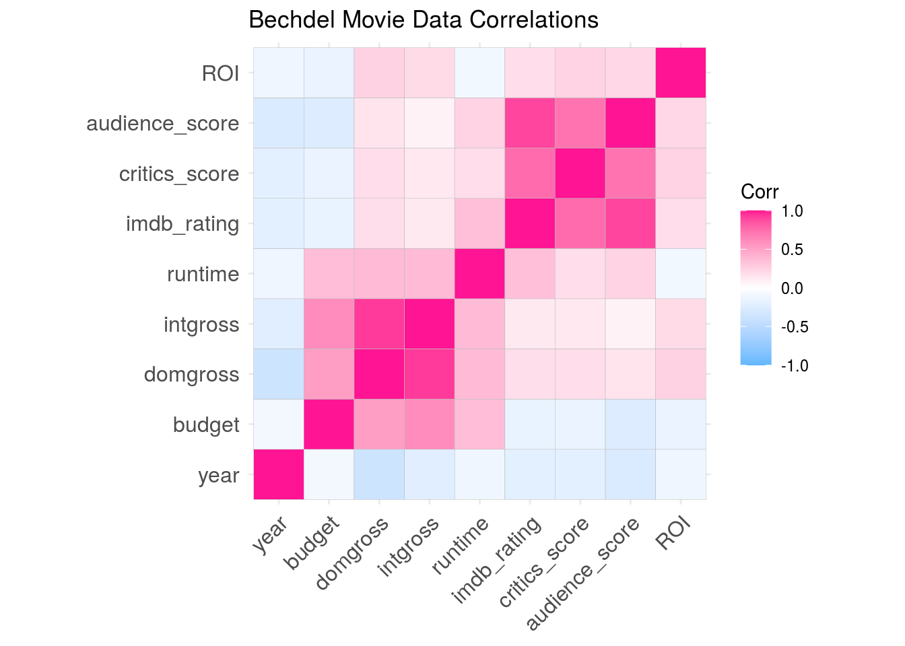
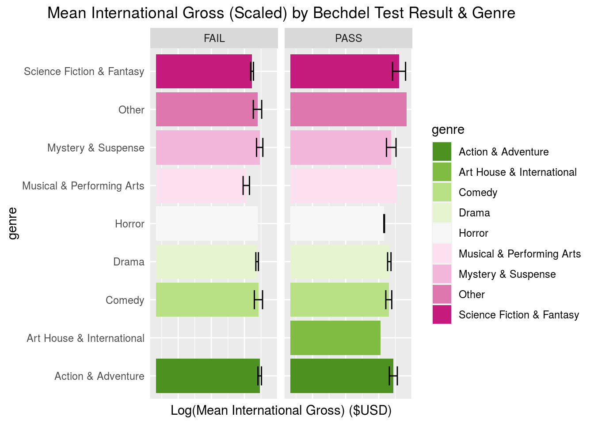
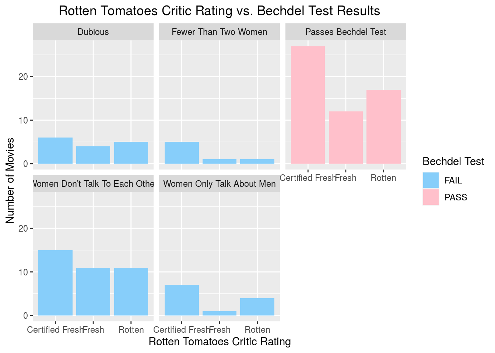
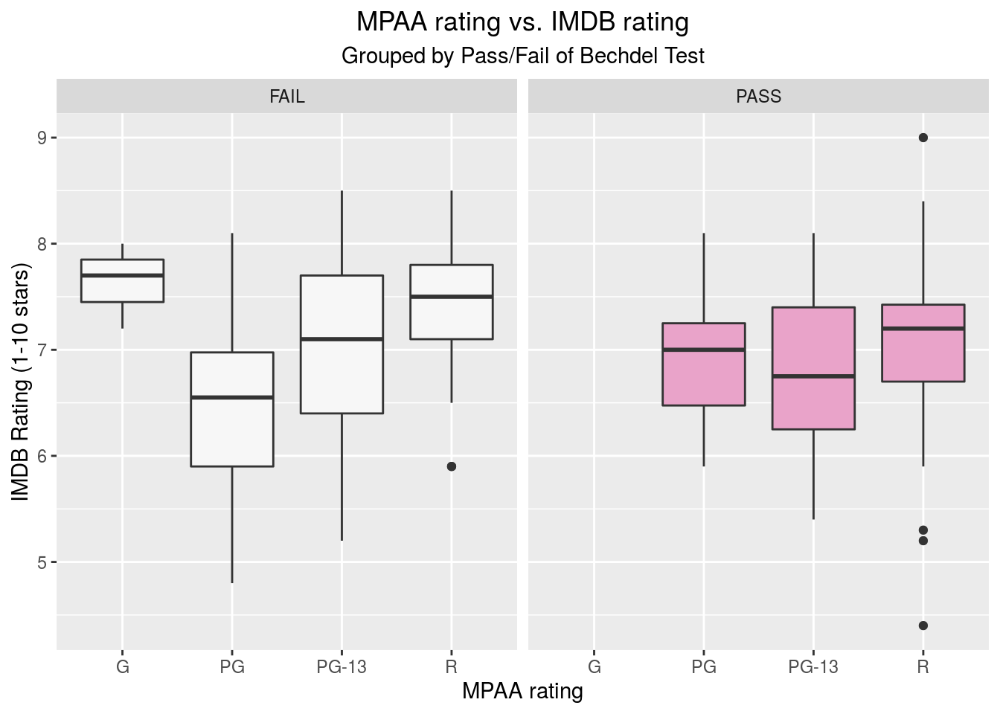
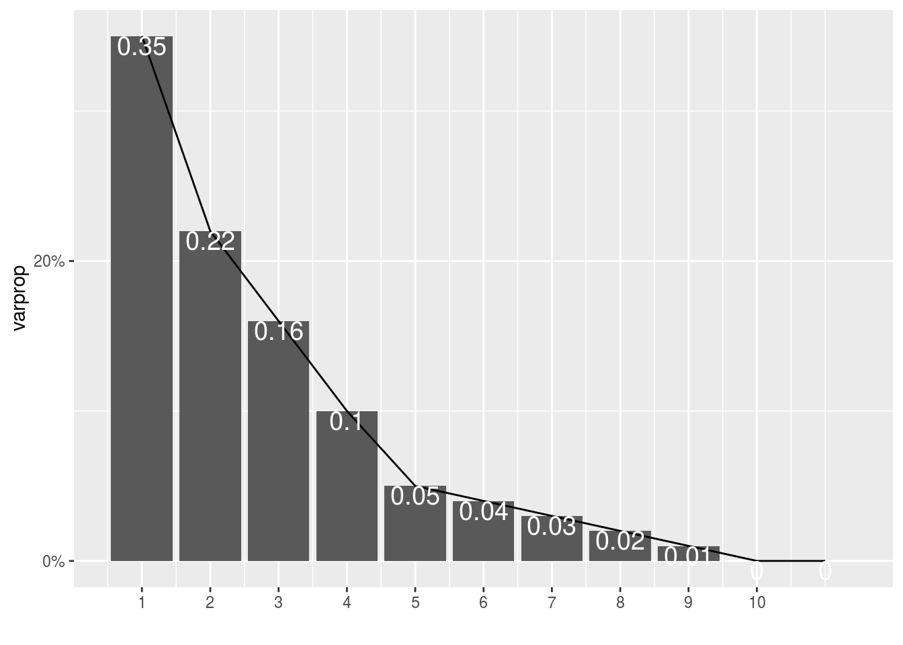
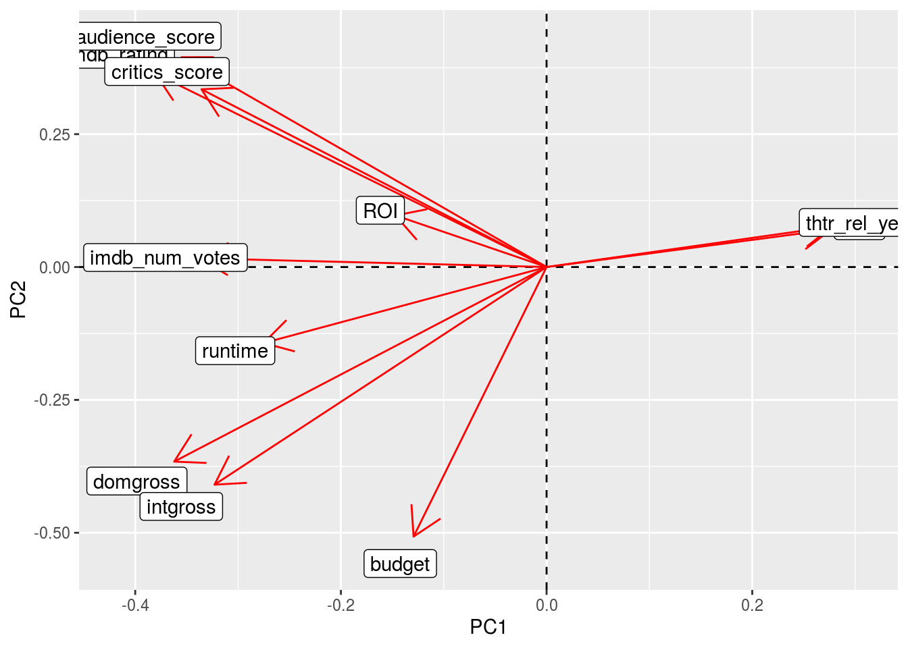
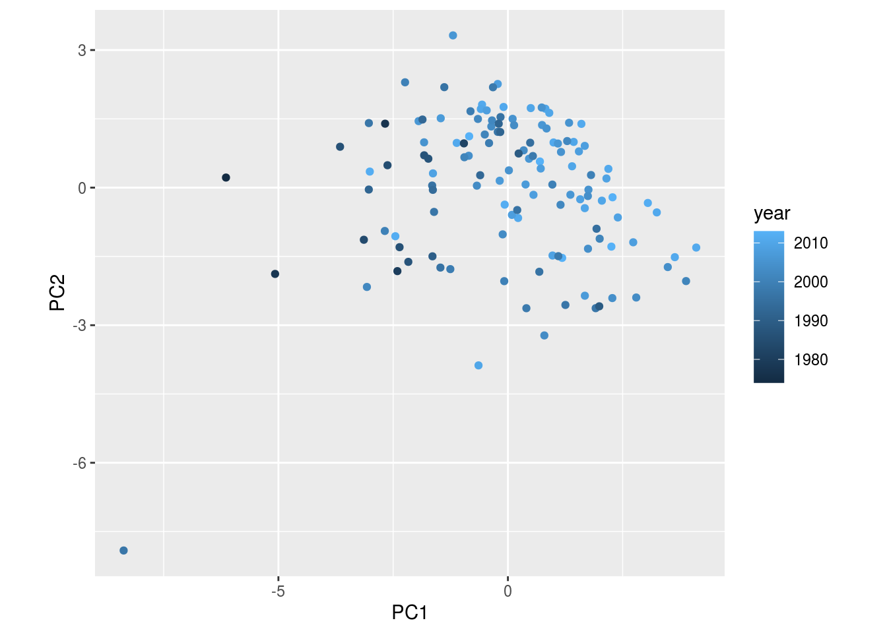

For my project, I have selected FiveThirtyEight’s ‘bechel’ dataset and the ‘movies’ dataset from Mine Çetinkaya-Rundel at Duke University who gathered the data from IMDB and Rotten Tomatoes’ websites. The ‘bechdel’ df can be pulled up by downloading/calling the FiveThirtyEight package and the ‘movies’ dataset can be found here: http://www2.stat.duke.edu/~mc301/data/movies.html.
The ‘movies’ dataset is a dataframe that contains 651 randomly sampled movies released between 1972 and 2014 in the US and their IMDB and Rotten Tomatoes data. The variables include title, genre, runtime, year (released), director, imdb_id, studio, and mpaa rating(g, pg, pg-13, etc.), which are all pretty self explanatory. It also includes audience_score and critics_score (% positive ratings on Rotten Tomatoes) and the critics_rating (on the “Tomatometer”, which is either ‘Fresh’ or ‘Rotten’ or ‘Certified Fresh’). Fresh being positive critic ratings greater than 60%, Rotten being less than 60% positive critic reviews, and Certified Fresh is a special distinction for the very best rated movies. The audience_score is quite similar but it’s represented by a popcorn bucket, and upright means 60%+ positive reviews, and below is spilled. (thtr/dvd)rel(year/month/day) is the individual day, month, year it was released in theaters. The best_(pic/actor/actress/director)_(win/nom) refers to Oscars nominations and wins for best picture, director, actor, actress. The only caveat, these nominations and wins are not necessarily for that movie (except best picture), but for one of the main 5 actors or the director in their overall career. Actor1 through actor5 variables are just the main 5 lead actors featured in the movie. Top200_box is whether or not the movie is in the Top 200 Box Office list on BoxOfficeMojo.
The ‘bechdel’ dataset contains 1794 rows (movies) and 15 variables. The bechdel test is a measure of how well women are represented in a film. A movie passes the Bechdel test if there are (1) two named women in it, (2) who talk to each other, (3) about something besides a man. This is a standard for bare minimum of depth for female characters in a film. Year, title, imdb (ID) and budget are pretty self explanatory. The binary variable is just whether is passes or fails the test; test is the bechdel result with ‘ok’ if pass, or the reason why it didn’t pass, and if it says ‘-disagree’ there has been debate about whether that factor could be debated. The clean_test variable is the same as test but doesn’t include these discrepancies. Domgross and intgross are domestic and international gross in US dollars and the same variables with "_2013" at the end are just inflation-adjusted. The variables code, decade_code, and period_code are irrelevant and will be dropped.
The data should be interesting to explore and see if the depth of female representation and interaction in movies has a positive or negative effect on the approval of critics, the public, or the profitability of the movie. I hope to find some kind of correlational evidence of movies that pass the Bechdel test performing better in the box office and ratings overall, disproving the belief that having females play a large role in films will hurt the profitability or approval, or possibly seeing which studios or genres are more likely to produce movies that pass the Bechdel test.
#Loading packages and datasets
library(fivethirtyeight)
library(tidyverse)
library(cluster)
library(knitr)
library(kableExtra)
bechdel<-read.csv("https://raw.githubusercontent.com/fivethirtyeight/data/master/bechdel/movies.csv")
load("/cloud/project/content/movies.Rdata")
#Having a look at our data
glimpse(bechdel)## Rows: 1,794
## Columns: 15
## $ year <int> 2013, 2012, 2013, 2013, 2013, 2013, 2013, 2013, 2013, …
## $ imdb <fct> tt1711425, tt1343727, tt2024544, tt1272878, tt0453562,…
## $ title <fct> 21 & Over, Dredd 3D, 12 Years a Slave, 2 Guns, 42,…
## $ test <fct> notalk, ok-disagree, notalk-disagree, notalk, men, men…
## $ clean_test <fct> notalk, ok, notalk, notalk, men, men, notalk, ok, ok, …
## $ binary <fct> FAIL, PASS, FAIL, FAIL, FAIL, FAIL, FAIL, PASS, PASS, …
## $ budget <int> 13000000, 45000000, 20000000, 61000000, 40000000, 2250…
## $ domgross <fct> 25682380, 13414714, 53107035, 75612460, 95020213, 3836…
## $ intgross <fct> 42195766, 40868994, 158607035, 132493015, 95020213, 14…
## $ code <fct> 2013FAIL, 2012PASS, 2013FAIL, 2013FAIL, 2013FAIL, 2013…
## $ budget_2013. <int> 13000000, 45658735, 20000000, 61000000, 40000000, 2250…
## $ domgross_2013. <fct> 25682380, 13611086, 53107035, 75612460, 95020213, 3836…
## $ intgross_2013. <fct> 42195766, 41467257, 158607035, 132493015, 95020213, 14…
## $ period.code <int> 1, 1, 1, 1, 1, 1, 1, 1, 1, 1, 1, 1, 1, 1, 1, 1, 1, 1, …
## $ decade.code <int> 1, 1, 1, 1, 1, 1, 1, 1, 1, 1, 1, 1, 1, 1, 1, 1, 1, 1, …glimpse(movies)## Rows: 651
## Columns: 32
## $ title <chr> "Filly Brown", "The Dish", "Waiting for Guffman", "T…
## $ title_type <fct> Feature Film, Feature Film, Feature Film, Feature Fi…
## $ genre <fct> Drama, Drama, Comedy, Drama, Horror, Documentary, Dr…
## $ runtime <dbl> 80, 101, 84, 139, 90, 78, 142, 93, 88, 119, 127, 108…
## $ mpaa_rating <fct> R, PG-13, R, PG, R, Unrated, PG-13, R, Unrated, Unra…
## $ studio <fct> Indomina Media Inc., Warner Bros. Pictures, Sony Pic…
## $ thtr_rel_year <dbl> 2013, 2001, 1996, 1993, 2004, 2009, 1986, 1996, 2012…
## $ thtr_rel_month <dbl> 4, 3, 8, 10, 9, 1, 1, 11, 9, 3, 6, 12, 1, 9, 6, 8, 3…
## $ thtr_rel_day <dbl> 19, 14, 21, 1, 10, 15, 1, 8, 7, 2, 19, 18, 4, 23, 20…
## $ dvd_rel_year <dbl> 2013, 2001, 2001, 2001, 2005, 2010, 2003, 2004, 2013…
## $ dvd_rel_month <dbl> 7, 8, 8, 11, 4, 4, 2, 3, 1, 8, 5, 9, 7, 2, 3, 12, 8,…
## $ dvd_rel_day <dbl> 30, 28, 21, 6, 19, 20, 18, 2, 21, 14, 1, 23, 9, 13, …
## $ imdb_rating <dbl> 5.5, 7.3, 7.6, 7.2, 5.1, 7.8, 7.2, 5.5, 7.5, 6.6, 6.…
## $ imdb_num_votes <int> 899, 12285, 22381, 35096, 2386, 333, 5016, 2272, 880…
## $ critics_rating <fct> Rotten, Certified Fresh, Certified Fresh, Certified …
## $ critics_score <dbl> 45, 96, 91, 80, 33, 91, 57, 17, 90, 83, 89, 67, 80, …
## $ audience_rating <fct> Upright, Upright, Upright, Upright, Spilled, Upright…
## $ audience_score <dbl> 73, 81, 91, 76, 27, 86, 76, 47, 89, 66, 75, 46, 89, …
## $ best_pic_nom <fct> no, no, no, no, no, no, no, no, no, no, no, no, no, …
## $ best_pic_win <fct> no, no, no, no, no, no, no, no, no, no, no, no, no, …
## $ best_actor_win <fct> no, no, no, yes, no, no, no, yes, no, no, yes, no, y…
## $ best_actress_win <fct> no, no, no, no, no, no, no, no, no, no, no, no, yes,…
## $ best_dir_win <fct> no, no, no, yes, no, no, no, no, no, no, no, no, no,…
## $ top200_box <fct> no, no, no, no, no, no, no, no, no, no, yes, no, no,…
## $ director <chr> "Michael D. Olmos", "Rob Sitch", "Christopher Guest"…
## $ actor1 <chr> "Gina Rodriguez", "Sam Neill", "Christopher Guest", …
## $ actor2 <chr> "Jenni Rivera", "Kevin Harrington", "Catherine O'Har…
## $ actor3 <chr> "Lou Diamond Phillips", "Patrick Warburton", "Parker…
## $ actor4 <chr> "Emilio Rivera", "Tom Long", "Eugene Levy", "Richard…
## $ actor5 <chr> "Joseph Julian Soria", "Genevieve Mooy", "Bob Balaba…
## $ imdb_url <chr> "http://www.imdb.com/title/tt1869425/", "http://www.…
## $ rt_url <chr> "//www.rottentomatoes.com/m/filly_brown_2012/", "//w…#get imdb ID's
imdb<-gsub("http://www.imdb.com/title/", "", movies$imdb_url)
imdb<-gsub("/", "", imdb)
movies$imdb <- imdb
movies%>%select(title, imdb)%>%glimpse()## Rows: 651
## Columns: 2
## $ title <chr> "Filly Brown", "The Dish", "Waiting for Guffman", "The Age of I…
## $ imdb <chr> "tt1869425", "tt0205873", "tt0118111", "tt0106226", "tt0388230"…#inner join
bechdat<-bechdel%>%inner_join(movies, by = 'imdb')First I had to change the variable imdb_url (starts with ‘tt’) to drop the link before and after it so I could join by imdb ID because joining by title caused problems and repeats. I chose an inner join because I only wanted movies present in both datasets because I wanted to be able to compare across multiple categories without N/A’s, I knew there would still be a lot of observations left over, even after dropping many movies. I also did this because there are so many variables, if a movie is missing in one set, there will be a lot of NA’s in the overall row. ____ cases were dropped total.
#dropping and renaming variable
bechdat2<-bechdat%>%
select(-code, -rt_url, -imdb_url, -period.code, -decade.code, -test, -budget, -domgross, -intgross, -dvd_rel_year, -dvd_rel_month, -dvd_rel_day, -thtr_rel_month, -thtr_rel_day, -title.x)%>%
rename(budget= budget_2013., domgross = domgross_2013., intgross = intgross_2013., title = title.y)To clean up the table a bit and remove unnecessary variables, I dropped the variables code, rt_url, period.code, decade.code, dvd_rel_(year/month/day), thtr_rel_month/day for irrelevance. I dropped test because I am using clean_test for a more detailed/clear bechdel test result. We’re also dropping budget, domgross, intgross in exchange for the inflation adjusted "_13" versions, which we will rename to the former. When joining we had two variables named title, which became title.x and title.y, so I dropped .x and renamed it to just title.
bech1<-bechdat2%>%pivot_longer(cols = c('actor1':'actor5'), names_to = 'role', values_to = 'actors')%>%
select(-role)
bech1<-bech1%>% group_by(imdb)%>%
mutate(lead_actors = paste(actors, collapse = ", "))%>%
select(-actors)%>%
distinct(lead_actors, .keep_all= TRUE)%>%
ungroup()
bech1%>%select(imdb, title, lead_actors)## # A tibble: 129 x 3
## imdb title lead_actors
## <chr> <chr> <chr>
## 1 tt15351… Captain Phillips Tom Hanks, Catherine Keener, Barkhad Abdi, Mich…
## 2 tt16505… Kick-Ass 2 Aaron Taylor-Johnson, Christopher Mintz-Plasse,…
## 3 tt18545… Percy Jackson: Sea… Logan Lerman, Brandon T. Jackson, Alexandra Dad…
## 4 tt20053… The Frozen Ground Nicolas Cage, John Cusack, Vanessa Hudgens, Dea…
## 5 tt12454… This Is the End James Franco, Jonah Hill, Danny McBride, Craig …
## 6 tt23348… White House Down Channing Tatum, Jamie Foxx, Maggie Gyllenhaal, …
## 7 tt13711… Cloud Atlas Tom Hanks, Halle Berry, Jim Broadbent, Hugo Wea…
## 8 tt18537… Django Unchained Jamie Foxx, Christoph Waltz, Leonardo DiCaprio,…
## 9 tt21014… Spring Breakers Selena Gomez, James Franco, Ashley Benson, Rach…
## 10 tt13921… The Hunger Games Jennifer Lawrence, Josh Hutcherson, Liam Hemswo…
## # … with 119 more rowsThere was a separate column for each lead actor, which I found unnecessary, so I combined all 5 into one observation under the variable lead_actors. Used pivot longer to combine all actors into one variable and be able to group by movie later. Used paste and collapse to form a string of values separated by a comma and space to list the top 5 actors per movie in a single row so there wasn’t duplicate data of every movie. We removed duplicate rows using the .keep_all function above.
#fix repeat studios
bech1$studio<- gsub("The Weinstein Company", "The Weinstein Co.", bech1$studio)
bech1$studio<- gsub("Weinstein Company", "The Weinstein Co.", bech1$studio)
bech1$studio<- gsub("Paramount Studios", "Paramount Pictures", bech1$studio)
bech1$studio<- gsub("Warner Bros. Pictures", "Warner Bros.", bech1$studio)
bech1%>%select(studio)%>%glimpse()## Rows: 129
## Columns: 1
## $ studio <chr> "Sony Pictures", "Universal Pictures", "20th Century Fox", "Th…Fixed as many of the repeat studios as I could using gsub.
#drop N/A, make ROI var
bech1<- bech1 %>% mutate_at(c("domgross", "intgross"), function(x)as.numeric(as.character(x))) %>%
filter(intgross != "#N/A") %>% na.omit %>%mutate(ROI= (intgross/budget))
bech1## # A tibble: 127 x 29
## year imdb clean_test binary budget domgross intgross title title_type genre
## <int> <chr> <fct> <fct> <int> <dbl> <dbl> <chr> <fct> <fct>
## 1 2013 tt15… notalk FAIL 5.50e7 1.07e8 2.19e8 Capt… Feature F… Drama
## 2 2013 tt16… ok PASS 2.80e7 2.88e7 6.08e7 Kick… Feature F… Acti…
## 3 2013 tt18… ok PASS 9.00e7 6.86e7 2.01e8 Perc… Feature F… Drama
## 4 2013 tt12… notalk FAIL 3.20e7 1.01e8 1.26e8 This… Feature F… Drama
## 5 2013 tt23… men FAIL 1.50e8 7.31e7 2.05e8 Whit… Feature F… Drama
## 6 2012 tt13… ok PASS 1.03e8 2.75e7 1.28e8 Clou… Feature F… Drama
## 7 2012 tt18… notalk FAIL 1.01e8 1.65e8 4.32e8 Djan… Feature F… Other
## 8 2012 tt21… ok PASS 5.07e6 1.43e7 3.11e7 Spri… Feature F… Drama
## 9 2012 tt13… ok PASS 8.12e7 4.14e8 6.95e8 The … Feature F… Drama
## 10 2011 tt17… nowomen FAIL 5.18e6 1.83e7 2.75e7 Apol… Feature F… Scie…
## # … with 117 more rows, and 19 more variables: runtime <dbl>,
## # mpaa_rating <fct>, studio <chr>, thtr_rel_year <dbl>, imdb_rating <dbl>,
## # imdb_num_votes <int>, critics_rating <fct>, critics_score <dbl>,
## # audience_rating <fct>, audience_score <dbl>, best_pic_nom <fct>,
## # best_pic_win <fct>, best_actor_win <fct>, best_actress_win <fct>,
## # best_dir_win <fct>, top200_box <fct>, director <chr>, lead_actors <chr>,
## # ROI <dbl>Dropped a single movie with ‘#N/A’ for both intgross and domgross, then made a new variable called ROI (Return on Investment) using mutate() which indicates what percent of the initial investment(budget) is returned by movie’s gross profits (intgross). Also used na.omit() because there was only one movie (“London to Brighton”) that had NA for domgross.
bech1<- bech1%>%mutate(clean_test = str_replace_all(clean_test,
"ok",
"Passes Bechdel Test"),
clean_test = str_replace_all(clean_test, "men",
"Women Only Talk About Men"),
clean_test = str_replace_all(clean_test, "notalk",
"Women Don't Talk To Each Other"),
clean_test = str_replace_all(clean_test, "nowoWomen Only Talk About Men",
"Fewer Than Two Women"),
clean_test = str_replace_all(clean_test, "dubious",
"Dubious"))Changed names of clean_test values to more accurately reflect what they mean, previous names were very unclear and hard to interpret.
#make century var
bech1$century<- ifelse(bech1$year < 2000,"Pre","Post")
#change fctr to categ
bech1<-bech1 %>% mutate_at(c("best_pic_nom", "best_pic_win", "best_actor_win", "best_actress_win", "best_dir_win", "top200_box"), function(x)as.character(as.factor(x)))
#categorical to binary
bech1<- bech1%>%mutate(best_pic_nom = if_else(best_pic_nom == "yes", TRUE, FALSE),
best_pic_win = if_else(best_pic_win == "yes", TRUE, FALSE),
best_actor_win = if_else(best_actor_win == "yes", TRUE, FALSE),
best_actress_win = if_else(best_actress_win == "yes", TRUE, FALSE),
best_dir_win = if_else(best_dir_win == "yes", TRUE, FALSE),
top200_box = if_else(top200_box == "yes", TRUE, FALSE))
bech1<- bech1%>%mutate(binary2 = if_else(binary == "PASS", TRUE, FALSE))Made century var to indicate if made before or after 2000, changed the factor variables to binary in order to easier compute summary statistics using mean() and sum() to get count and proportion.
#the very top rated movies and whether or not they passed
sum1 <- bech1%>%select(title, audience_rating, critics_rating, top200_box, binary)%>%filter(audience_rating == "Upright", critics_rating == "Certified Fresh", top200_box == TRUE)
sum1%>%kable()%>%kable_styling(bootstrap_options = "striped", full_width = F)| title | audience_rating | critics_rating | top200_box | binary |
|---|---|---|---|---|
| The Hunger Games | Upright | Certified Fresh | TRUE | PASS |
| The Hangover | Upright | Certified Fresh | TRUE | FAIL |
| Harry Potter and the Chamber of Secrets | Upright | Certified Fresh | TRUE | PASS |
| Cast Away | Upright | Certified Fresh | TRUE | FAIL |
| Titanic | Upright | Certified Fresh | TRUE | PASS |
| Aladdin | Upright | Certified Fresh | TRUE | FAIL |
| Beverly Hills Cop | Upright | Certified Fresh | TRUE | FAIL |
| Superman II | Upright | Certified Fresh | TRUE | FAIL |
| Grease | Upright | Certified Fresh | TRUE | PASS |
#paramount pics makes the most passing films
sum2 <- bech1%>%group_by(studio)%>%filter(binary == "PASS")%>%summarise(n_pass = n())%>%arrange(desc(n_pass))
sum2%>%glimpse## Rows: 35
## Columns: 2
## $ studio <chr> "Paramount Pictures", "Universal Pictures", "20th Century Fox"…
## $ n_pass <int> 8, 4, 3, 3, 2, 2, 2, 2, 2, 2, 2, 1, 1, 1, 1, 1, 1, 1, 1, 1, 1,…#mean, med, sd of critics score grouped by bechdel test indicators
sum3 <- bech1%>%group_by(clean_test)%>%
summarise(med_ROI = median(ROI), mean_critic = mean(critics_score), sd_critic = sd(critics_score))%>%arrange(desc(med_ROI))
sum3%>%kable()%>%kable_styling(bootstrap_options = "striped", full_width = F)| clean_test | med_ROI | mean_critic | sd_critic |
|---|---|---|---|
| Fewer Than Two Women | 5.459309 | 77.14286 | 24.87588 |
| Women Only Talk About Men | 5.244376 | 72.75000 | 24.75379 |
| Dubious | 2.983381 | 66.86667 | 20.67389 |
| Passes Bechdel Test | 2.746332 | 67.42857 | 23.12799 |
| Women Don’t Talk To Each Other | 2.697400 | 65.48649 | 24.52054 |
#greatest budgets go to movies where women don't talk to each other but they have the lowest median ROI
sum4 <- bech1%>%group_by(binary, clean_test)%>%
summarise(med_ROI = median(ROI), med_budget = median(budget), med_intgross = median(intgross))%>%arrange(desc(med_ROI))
sum4%>%kable()%>%kable_styling(bootstrap_options = "striped", full_width = F)| binary | clean_test | med_ROI | med_budget | med_intgross |
|---|---|---|---|---|
| FAIL | Fewer Than Two Women | 5.459309 | 17625825 | 201487544 |
| FAIL | Women Only Talk About Men | 5.244376 | 15563006 | 75018494 |
| FAIL | Dubious | 2.983381 | 46231854 | 107125483 |
| PASS | Passes Bechdel Test | 2.746332 | 36473844 | 70345821 |
| FAIL | Women Don’t Talk To Each Other | 2.697400 | 55000000 | 124705810 |
#most grammy wins are given to bechdel passing test
sum5 <- bech1%>%group_by(binary, clean_test)%>%summarise(sum(best_pic_nom), n_best_pic_win = sum(best_pic_win), sum(best_dir_win), sum(best_actor_win), sum(best_actress_win))%>%arrange(desc(n_best_pic_win))%>%select(binary, clean_test, n_best_pic_win, everything())
sum5%>%kable()%>%kable_styling(bootstrap_options = "striped", full_width = F)| binary | clean_test | n_best_pic_win | sum(best_pic_nom) | sum(best_dir_win) | sum(best_actor_win) | sum(best_actress_win) |
|---|---|---|---|---|---|---|
| PASS | Passes Bechdel Test | 4 | 7 | 8 | 9 | 14 |
| FAIL | Dubious | 1 | 3 | 2 | 6 | 2 |
| FAIL | Women Don’t Talk To Each Other | 1 | 2 | 6 | 6 | 3 |
| FAIL | Fewer Than Two Women | 0 | 1 | 0 | 0 | 0 |
| FAIL | Women Only Talk About Men | 0 | 1 | 1 | 2 | 0 |
#more pass test since 2000
sum6 <- bech1%>%group_by(century)%>%summarise(tot_pass = sum(binary2), n = n(), percent_pass = mean(binary2))%>%arrange(desc(percent_pass))
sum6%>%kable()%>%kable_styling(bootstrap_options = "striped", full_width = F)| century | tot_pass | n | percent_pass |
|---|---|---|---|
| Post | 39 | 85 | 0.4588235 |
| Pre | 17 | 42 | 0.4047619 |
Summary 1- Out of the movies that scored the top ranking on IMDB for both critics and audience, and were in the top 200 box office, most actually failed the Bechdel test. Summary 2- Paramount Studios produces the most films passing the Bechdel test (may be a good place to go if you’re a woman in the film industry!). Summary 3- Across the different Bechdel Test requirements, movies that passed or failed (doesn’t matter why they failed) are not rated significantly different by critics. However, movies where there are less than 2 named women seemed to have the largest return on investment (this could possibly be due to a small budget given to these types of movies, or maybe a small budget means less actors & actress a producer is able to hire). Summary 4- The greatest budgets go to movies where women don’t talk to each other but they also have the lowest median ROI- even if producers had women just talking to each other about a man, their ROI could shoot up to 5.24x ROI! Summary 5- The most Grammy wins across EVERY category goes to movies that PASS the Bechdel Test (woo!). Summary 6- A greater percent of movies produced in the 21st century pass the test as opposed to before - yay, progress.
#correlation matrix of most numeric variables
bech_cor <- bech1 %>% select_if(is.numeric) %>% select(-thtr_rel_year, -imdb_num_votes) %>% na.omit %>% cor()
bech_cor## year budget domgross intgross runtime
## year 1.00000000 -0.09064457 -0.3680710 -0.22785696 -0.1175514
## budget -0.09064457 1.00000000 0.5184256 0.61131509 0.3647877
## domgross -0.36807097 0.51842561 1.0000000 0.92926186 0.3704819
## intgross -0.22785696 0.61131509 0.9292619 1.00000000 0.3690085
## runtime -0.11755139 0.36478766 0.3704819 0.36900845 1.0000000
## imdb_rating -0.20559467 -0.17300644 0.1794903 0.12429683 0.3474642
## critics_score -0.20902102 -0.15618645 0.1939696 0.12871453 0.1925464
## audience_score -0.27348845 -0.26084253 0.1462348 0.07108851 0.2360699
## ROI -0.11861473 -0.15738606 0.2518450 0.19872773 -0.1015787
## imdb_rating critics_score audience_score ROI
## year -0.2055947 -0.2090210 -0.27348845 -0.1186147
## budget -0.1730064 -0.1561865 -0.26084253 -0.1573861
## domgross 0.1794903 0.1939696 0.14623480 0.2518450
## intgross 0.1242968 0.1287145 0.07108851 0.1987277
## runtime 0.3474642 0.1925464 0.23606990 -0.1015787
## imdb_rating 1.0000000 0.7555322 0.90368952 0.1878592
## critics_score 0.7555322 1.0000000 0.71788639 0.2394272
## audience_score 0.9036895 0.7178864 1.00000000 0.2215078
## ROI 0.1878592 0.2394272 0.22150783 1.0000000#cor heatmap
library(ggcorrplot)
ggcorrplot(bech_cor, colors = c("steelblue1", "white", "deeppink"))+labs(title = "Bechdel Movie Data Correlations") From our heatmap, we can see the darker pink areas have the greatest correlation. Off the bat, some of the darkest correlations are intgross~domgross, audience_score~imdb_rating, critics_score~imdb_rating, audience_score~critics_score, int_gross~budget, then it starts to get very weakly correlated. It makes sense that domestic and international gross are very highly correlated because intgross encompasses domgross, and usually if a film is very popular domestically, there is a good chance it will be internationally as well. The audience score, critics score, and IMDB score are all correlated with each other, probably because the audience is usually the one filling out IMDB scores on the site, and if they are reviewing on one site, it is likely they would review on another (Rotten Tomatoes & IMDB). Additionally critics are technically audience too, so they probably have similar reviews to audience, but it is also possible that outside of formal, professional reviews, they could leave personal ones too. Finally, the international gross and budget being correlated makes sense because the more money you tend to put in a production, usually the better made it is, and the more well received it’ll be both domestically and abroad.
#ggplot1 with stat summary
library(scales)
bech1%>%ggplot()+geom_bar(aes(x=genre, y= intgross, fill=genre), stat = "summary", fun.y="mean")+
scale_fill_brewer(palette = "PiYG", direction = -1)+
geom_errorbar(stat = "summary", fun.data= mean_se, aes(x=genre, y=intgross), width=.5)+
theme(axis.ticks = element_blank(), axis.text.x = element_blank())+
coord_flip() +
scale_y_continuous(trans=log_trans(), name = "Log(Mean International Gross) ($USD)")+
facet_wrap(~binary) +
labs(title = "Mean International Gross (Scaled) by Bechdel Test Result & Genre")+
theme(plot.title = element_text(hjust = .5)) Once scaled to account for extremely, internationally popular movies, we can see that not only is there very few real significant differences in international gross across movie genres in both movies that pass and fail the test (some that stick out as statistically different would be musicals as being statistically lower on average than comedy, mystery, drama, action), but potentially science fiction/fantasy movies do better when it passes the bechdel test. Otherwise, passing or failing the Bechdel test doesn’t really seem to hurt or help your international gross across genres.
#ggplot2
bech1%>%ggplot()+geom_bar(aes(x=critics_rating, fill=binary))+facet_wrap(~clean_test)+ scale_fill_manual(values = c("lightskyblue", "pink")) +
labs(title = "Rotten Tomatoes Critic Rating vs. Bechdel Test Results",
x = "Rotten Tomatoes Critic Rating",
y = "Number of Movies",
fill= "Bechdel Test") +
theme(plot.title = element_text(hjust = .5)) In this one, we can see that there are many more movies that rate in the Certified Fresh and Fresh categories than any of the failing categories. Granted, there are greater numbers in the passing because the failing movies have been split up across categories, but even when put back together, there are 27/56 (48%) movies that pass and are Certified Fresh as compared to 33/71 (45%) movies that fail and are rated Certified Fresh, so the percent of movies that score higher by critics on Rotten Tomatoes is greater.
#ggplot3
bech1%>%ggplot()+geom_boxplot(aes(x=mpaa_rating, y=imdb_rating, fill=binary))+
facet_wrap(~binary)+scale_fill_brewer(palette = "PiYG", direction = -1) +
labs(title = "MPAA rating vs. IMDB rating",
subtitle = "Grouped by Pass/Fail of Bechdel Test",
x = "MPAA rating",
y = "IMDB Rating (1-10 stars)") +
theme(legend.position = "none", plot.title = element_text(hjust = .5), plot.subtitle = element_text(hjust = .5)) We can see that there is no significant difference in IMDB ratings across films that pass or fail the Bechdel test, and across MPAA ratings. It is interesting to note here, that there are no rated G movies that pass the Bechdel test. If we use MPAA rating as a proxy for target audience, it is interesting to see there are no real kids movies that truly represent women, which also suggests a lack of depth in role models for young girls- this is something that could be explored further.
#select all numeric variables and scale them
bech_nums <- bech1 %>% select_if(is.numeric) %>% scale()
#examine covariance
bech_nums%>%cov## year budget domgross intgross runtime
## year 1.00000000 -0.09064457 -0.3680710 -0.22785696 -0.1175514
## budget -0.09064457 1.00000000 0.5184256 0.61131509 0.3647877
## domgross -0.36807097 0.51842561 1.0000000 0.92926186 0.3704819
## intgross -0.22785696 0.61131509 0.9292619 1.00000000 0.3690085
## runtime -0.11755139 0.36478766 0.3704819 0.36900845 1.0000000
## thtr_rel_year 0.99911576 -0.10003331 -0.3738097 -0.23394879 -0.1245589
## imdb_rating -0.20559467 -0.17300644 0.1794903 0.12429683 0.3474642
## imdb_num_votes -0.01298938 0.20040862 0.4292512 0.41198038 0.4705619
## critics_score -0.20902102 -0.15618645 0.1939696 0.12871453 0.1925464
## thtr_rel_year imdb_rating imdb_num_votes critics_score
## year 0.99911576 -0.2055947 -0.01298938 -0.2090210
## budget -0.10003331 -0.1730064 0.20040862 -0.1561865
## domgross -0.37380968 0.1794903 0.42925116 0.1939696
## intgross -0.23394879 0.1242968 0.41198038 0.1287145
## runtime -0.12455886 0.3474642 0.47056195 0.1925464
## thtr_rel_year 1.00000000 -0.2064607 -0.01663107 -0.2026253
## imdb_rating -0.20646068 1.0000000 0.59213256 0.7555322
## imdb_num_votes -0.01663107 0.5921326 1.00000000 0.3832688
## critics_score -0.20262532 0.7555322 0.38326880 1.0000000
## audience_score ROI
## year -0.27348845 -0.11861473
## budget -0.26084253 -0.15738606
## domgross 0.14623480 0.25184499
## intgross 0.07108851 0.19872773
## runtime 0.23606990 -0.10157867
## thtr_rel_year -0.27183192 -0.10957451
## imdb_rating 0.90368952 0.18785915
## imdb_num_votes 0.43239796 0.06505055
## critics_score 0.71788639 0.23942722
## [ reached getOption("max.print") -- omitted 2 rows ]#assign movie titles to row names
rownames(bech_nums) <- bech1$title
#run pca and summarize
bech_pca <- princomp(bech_nums)
summary(bech_pca, loadings=T)## Importance of components:
## Comp.1 Comp.2 Comp.3 Comp.4 Comp.5
## Standard deviation 1.9611200 1.5597542 1.3351310 1.0643341 0.73627758
## Proportion of Variance 0.3524105 0.2229219 0.1633384 0.1037998 0.04967337
## Cumulative Proportion 0.3524105 0.5753324 0.7386708 0.8424706 0.89214397
## Comp.6 Comp.7 Comp.8 Comp.9 Comp.10
## Standard deviation 0.66915449 0.58096705 0.51978643 0.264230932 0.225950020
## Proportion of Variance 0.04102922 0.03092741 0.02475656 0.006397463 0.004678054
## Cumulative Proportion 0.93317320 0.96410060 0.98885716 0.995254628 0.999932682
## Comp.11
## Standard deviation 2.710468e-02
## Proportion of Variance 6.731769e-05
## Cumulative Proportion 1.000000e+00
##
## Loadings:
## Comp.1 Comp.2 Comp.3 Comp.4 Comp.5 Comp.6 Comp.7 Comp.8 Comp.9
## year 0.277 0.598 0.179 0.101
## budget -0.129 -0.507 0.145 -0.131 0.168 0.363 -0.673 0.250
## domgross -0.362 -0.366 0.246 0.154 0.390 0.155
## intgross -0.323 -0.409 0.114 0.250 0.212 0.331 -0.229
## runtime -0.275 -0.143 0.269 -0.395 -0.736 0.269 0.216 -0.109
## thtr_rel_year 0.278 0.595 0.187 0.105
## imdb_rating -0.380 0.364 0.142 0.303 -0.736
## imdb_num_votes -0.337 0.380 -0.714 -0.338 -0.283 0.155
## critics_score -0.336 0.334 0.317 0.501 -0.633
## Comp.10 Comp.11
## year 0.706
## budget
## domgross 0.683
## intgross -0.662
## runtime
## thtr_rel_year -0.708
## imdb_rating 0.230
## imdb_num_votes
## critics_score
## [ reached getOption("max.print") -- omitted 2 rows ]eigval <- bech_pca$sdev^2 #square to convert SDs to eigenvalues
#proportion of variance explained by each PC
varprop=round(eigval/sum(eigval), 2)
#ggplot to determine "elbow"
ggplot() + geom_bar(aes(y=varprop, x=1:11), stat="identity") + xlab("") + geom_path(aes(y=varprop, x=1:11)) +
geom_text(aes(x=1:11, y=varprop, label=round(varprop, 2)), vjust=1, col="white", size=5) +
scale_y_continuous(breaks=seq(0, .6, .2), labels = scales::percent) +
scale_x_continuous(breaks=1:10)
#it appears to break at 5, though it is not super sharp, so we will go with 5 principal components
#visualizing how our variables break down across PC1 and PC2
bech_pca$loadings[1:11, 1:2] %>% as.data.frame %>% rownames_to_column %>%
ggplot() + geom_hline(aes(yintercept=0), lty=2) +
geom_vline(aes(xintercept=0), lty=2) + ylab("PC2") + xlab("PC1") +
geom_segment(aes(x=0, y=0, xend=Comp.1, yend=Comp.2), arrow=arrow(), col="red") +
geom_label(aes(x=Comp.1*1.1, y=Comp.2*1.1, label=rowname))
bech1 %>% mutate(PC1=bech_pca$scores[, 1], PC2=bech_pca$scores[, 2]) %>%
ggplot(aes(PC1, PC2, color=year)) + geom_point() + coord_fixed() From our findings, we can see that theater release year and year is the greatest negatively correlated from the rest of the variables, but extremely correlated with each other (nearly 1). Audience score, critic score, and IMDB rating are all so correlated they are nearly synonymous. We can also see the budget and ratings are not very correlated at all, probably because most movies have similar budgets but very widely varying opinion on the movie. In addition, domestic and international gross are both very correlated. Overall, there aren’t very clear principle components to our data, and it is difficult to distinguish them into distinct groups as seen on our ggplot, because most of the points are clustered into one group even across the 2 major principal components.